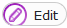
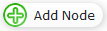
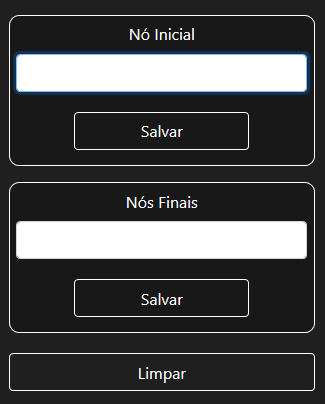
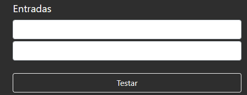

Adicionando nós :
Para adicionar nós clique no ícone , e depois em 
e clique no campo para adicionar os nós.
Ligando os nós :
Para ligar dois nós clique no icone e depois em
e tendo dois nós adicionados ligue eles, arrastando, de um nó para outro, irá abrir uma caixa de diálogo, basta adicionar o valor de transição.
Definindo nó inicial e terminal :

No campo Nó Inicial defina qual o nó será o nó inicial e clique em salvar, assim definindo qual será o inicial.
No campos Nó Final defina qual nó será o terminal e clique em salvar, assim definindo qual será o final.
O botão limpar serve para limpar a tela dos autômatos.
Para remover ligações :
Para remover uma ligação de nós você precisa clicar em e depois selecionar a ligação, e depois clicar em .
Para testar uma expressão :
Basta digitar uma regra em cima e uma regra no campo de texto em baixo.

Se as regras forem aceitas os campos ficarão verdes, caso contrário ficaram vermelhos.